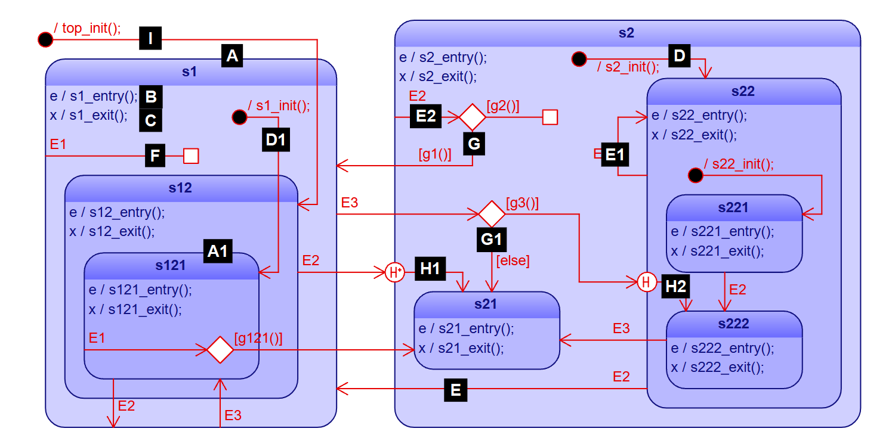

QP/C
8.0.2
Real-Time Embedded Framework
Event-driven systems work by responding to Events. In general, the system's response to a given Event depends both on the nature of that Event (captured in its Signal) and on the history of events the system has received. In practice not all aspects of the full "history of past events" are relevant. The simplified history consisting only of aspects that are consequential for the system's response to future events is called the Relevant History.
State is an equivalence class of past histories of a system, all of which are equivalent in the sense that the future behavior of the system given any of these past histories will be identical. Thus, the concept of "State" is the most efficient representation of the Relevant History of the system. It is the minimum information that captures only the relevant aspects for the future behavior and abstracts away all irrelevant aspects.
Transition is a change from one State to another during the lifetime of a system. In event-driven systems, a change from one state to another can be caused only by an event. The events that triggers a Transition is called Triggering Event or just Trigger of the Transition.
State Machine is the set of all States (equivalence classes of relevant histories), plus all the Transitions (rules for changing States). An important benefit of the State Machine formalism is the expressive graphical representation of State Machines in form of state diagrams.
Hierarchical State Machine (a.k.a. UML statechart) is an advanced formalism which extends the traditional state machines in several ways. The most important innovation of UML state machines over classical state machines is the introduction of hierarchically nested states. The value of state nesting lies in avoiding repetitions, which are inevitable in the traditional "flat" state machine formalism. The semantics of state nesting allow substates to define only the differences in behavior from the superstates, thus promoting sharing and reuse of behavior.
State Machines, and Hierarchical State Machines, in particular, can be implemented in many different ways. A specific way of implementing a state machine will be called here a State Machine Implementation Strategy, and it can be characterized by the following properties:
No single state machine implementation strategy can be optimal for all circumstances, and therefore QP Framework shall support multiple and interchangeable strategies (see SRS_QP_SM_20).
Every state machine must be initialized before it can process any events. The initialization is accomplished by executing the top-most initial transition, which must be present in every well-formed state machine.
The event processing inside a state machine is called dispatching an event to the state machine, and it requires interaction between the QP Framework and the QP Application, as illustrated in Figure RS-SM-DIS. The process of event dispatching consists of multiple interactions between the State Machine Processor inside QP Framework and State Machine Specification inside QP Application. The framework chooses with elements of the "State Machine Specification" to call (e.g., states). The "Specification" then performs the actions and returns the status of processing (e.g., a transition has been taken) back to the "State Machine Processor". Based on this status, the "State Machine Processor" decides which element of the "Specification" to call next or that the processing is complete.
The "State Machine Specification" is provided inside the QP Application and is prepared according to the rules defined by the chosen State Machine Implementation Strategy in QP Framework. Typically an implementation strategy represents a state machine as several elements, such as states, transitions, etc.
The "State Machine Specification" can mean state machine code (when the state machine is coded manually) or a state machine model (when the state machine is specified in a modeling tool, like "QM"↑). Either way, it is highly recommended to think of the state machine implementation as the specification of state machine elements, not merely code. This notion of "specifying" a state machine rather than coding it can be reinforced by selecting an expressive and fully traceable state machine implementation strategy, see SRS_QP_SM_40. The advantage of a traceable implementation is that each artifact at all levels of abstraction (design to code) unambiguously represents an element of a state machine.
A state machine is executed in QP Framework by the "State Machine Processor" that decides which elements of the "State Machine Specification" to call. Once called, the chosen part of the "State Machine Specification" executes some actions and returns back to the "State Machine Processor" (QP Framework) with the status information as to what has happened. For example, the returned status might inform the "State Machine Processor" that a state transition needs to be taken, or that the event needs to be propagated to the superstate in the hierarchical state machine.
The "State Machine Processor" is a passive software component that needs to be explicitly called from some context of execution (e.g., thread) to dispatch each event to the given state machine object. The most important restriction is that the dispatch operation must necessarily run to completion (Run-to-Completion processing) before another event can be dispatched to the same state machine object.
RTC event processing means, among others, that a state machine should NOT block or busy-poll for events (e.g., a semaphore-wait or busy-delay) because every such blocking or busy-polling represents waiting for an event, which will be delivered immediately after the call unblocks. The problem is that such a "backdoor" event is delivered before the original RTC step completes, thus violating the RTC semantics. Blocking inside a state machine also extends the RTC processing and makes the state machine unresponsive to new events.
Between the discrete RTC steps, the state machine remains in a stable state configuration, which is called the current state. The current state changes in real-time as the state machine executes RTC steps and transitions from one state to another. Because the state changes occur in run-time, every state machine must store its state in a variable, which is called state variable.
The event that has been dispatch to the state machine is called the current event. This current event must not change and must be accessible to the state machine over the entire RTC step.
SRS_QP_SM_00: QP Framework shall provide support for hierarchical state machines both for Active Objects and for passive event-driven objects in the Application |
Description Support for hierarchical state machines (HSMs) means that QP Framework shall provide a set of rules for State Machine Specifications (rules for coding state machines in the QP Application) as well as the matching implementation of the State Machine Processor (inside the QP Framework) to handle events according to HSM semantics defined in requirements in this section. |
Background In QP Framework, state machines can be associated only with objects, which provide the execution context (e.g., the data and other resources accessed by the state machine, see also SRS_QP_SM_22). These objects can be both active and passive. Active Objects are specified in the dedicated section of this requirement specification document. Passive objects with a state machine can be useful as event-driven components ("Orthogonal Components") inside Active Objects or inside device drivers, Interrupt Service Routines (ISRs), or other parts of the system. |
Forward Traceability (truncated to 2 level(s))
|
SRS_QP_SM_01: Hierarchical state machines shall maintain their current state between RTC steps. |
Description The main job of a state machine is to "remember" its current state between the RTC steps. |
Forward Traceability (truncated to 2 level(s)) |
SRS_QP_SM_10: QP Framework shall support multiple and interchangeable State Machine Implementation Strategies |
Description QP Application can choose the State Machine Implementation Strategy (out of a set of supported strategies) through the type of a state machine object. Based on that type, QP Framework shall then resolve the matching "State Machine Processor" (matching dispatch method) at run-time (e.g., by virtual call). Moreover, QP Framework shall allow Applications to add their State Machine Implementation Strategies, and QP Framework shall still resolve the matching (application-defined) dispatch method based on the type of the state machine object. |
Background Application-defined State Machine Implementation Strategies might be useful for special purposes, such as components with stringent performance requirements (but perhaps fewer state machine features) or test doubles (in TDD). |
Forward Traceability (truncated to 2 level(s))
|
SRS_QP_SM_20: QP Framework shall provide a State Machine Implementation Strategy optimized for "manual coding" |
Description "Optimized for manual coding" means that changing a single element in the state machine design (e.g., nesting of the state hierarchy) should require changing only a single matching element in the implementation. |
Background The State Machine Implementation Strategy "optimized for manual coding" imposes restrictions on the implementation strategy but does not mean that the code must be written manually. In the presence of a modeling tool, such code can also be generated automatically. |
Forward Traceability (truncated to 2 level(s))
|
SRS_QP_SM_21: QP Framework should provide a State Machine Implementation Strategy optimized for "automatic code generation" |
Description "Optimized for automatic code generation" means the implementation may contain some redundant information to improve the efficiency of the state machine execution. Also, such a strategy can support more advanced state machine features (see SRS_QP_SM_21) than a strategy constrained by the limitations of "manual coding" (see SRS_QP_SM_20). |
Background Automatically generated code not intended for manual maintenance allows relaxing the restrictions imposed by "manual coding". In that case, a State Machine Implementation Strategy "optimized for automatic code generation" offers the application developers a choice of higher-performance and/or more features than the strategy "optimized for manual coding." For example, an implementation may contain "transition tables" with information about the chains of state exit and entry actions to execute for a given transition (instead of determining the state exit and entry at run-time). This optimization might require adjusting multiple "transition tables" when changing the hierarchical nesting of a single state, which is considered unsuitable for manual coding (see SRS_QP_SM_20). However, optimization of that kind is trivial for an automatic code generator. |
Forward Traceability (truncated to 2 level(s))
|
SRS_QP_SM_22: All State Machine Implementation Strategies provided by QP Framework shall be bidirectionally traceable |
Description Bi-directional traceability of a State Machine Implementation Strategy means that the rules of the "State Machine Specification" are such that:
|
Background Traceability between design and implementation is a required property for many functional safety standards. Additionally, traceability of state machine implementation is an extremely valuable property is a cornerstone for effective debugging and tracing of state machine execution. For example, traceable implementation allows a developer to set a breakpoint on a specific state transition, state-entry action, a specific guard condition etc. Without a one-to-one traceability between state machine design and code, such elements (e.g., transitions) might be repeated, which would hinder debugging. |
Forward Traceability (truncated to 2 level(s))
|
SRS_QP_SM_23: QP Framework shall ensure that the current event does not change and is accessible to the state machine implementation over the entire RTC step. |
Description The unchangeability of the current event means that both its Signal and Parameters remain unchanged throughout the RTC step within the state machine. Also the access to the current event should be computationally inexpensive (e.g., via a pointer or a reference to the current event). |
Background The most important aspect of this requirement is preventing any changes to the current event throughout all RTC steps that the event might be involved in (in case the same event is dispatched to multiple state machines). Also, QP Framework shall make provisions for protecting the current event (e.g., by making it |
Forward Traceability (truncated to 2 level(s))
|
SRS_QP_SM_24: All State Machine Implementation Strategies provided by QP shall allow Applications to easily access the instance variables associated with a given state machine object |
Description QP framework shall allow for easy and computationally inexpensive access to the internal attributes of the object associated with the state machine from within that object. A good example of implementing such a policy is the concept of class encapsulation in OOP, where the internal attributes are accessible to the class operations (e.g., via the |
Background At the same time, QP Framework shall provide encapsulation of the state machine objects. While QP Framework alone cannot rigorously enforce such encapsulation, the framework should allow the QP Application to hide such access from the outside of the state machine object. |
Forward Traceability (truncated to 2 level(s))
|
SRS_QP_SM_25: All State Machine Implementation Strategies provided by QP Framework might supply a method for checking if a state machine is in a given state |
Description The "is-in" state operation returns 'true' if the current state of the state machine is equal or is a substate of the given state. Otherwise, the "is-in" operation returns 'false'. Please note that in a hierarchical state machine, to "be in a state" means also to be in a superstate of the given state. |
Background This operation is intended to be used only for state machines that run in the same thread of execution. For example, a given Active Object could use the "is-in" check on one of the "Orthogonal Components" owned by that Active Object. |
Forward Traceability (truncated to 2 level(s))
|
SRS_QP_SM_30: All State Machine Implementation Strategies provided by QP Framework shall support hierarchical state machines with features specified in the sub-requirements SRS_QP_SM_3x |
Description The state diagram shown in Figure SRS-SM-HSM below demonstrates a Hierarchical State Machine with all features that need to be supported by all State Machine Implementation Strategies provided in QP Framework:

|
Background The hierarchical state machine shown in Figure SRS-SM-HSM, demonstrates only a subset of features found in UML Statecharts [UML-05]. Most notably, the UML Statecharts features not supported in the QP Framework include "orthogonal regions" and several kinds of "pseudostates". |
Forward Traceability (truncated to 2 level(s))
|
SRS_QP_SM_31: All State Machine Implementation Strategies provided by QP Framework shall support states capable of holding hierarchically nested substates |
Description An example state is shown in Figure SRS-SM-HSM [A]. This is a composite state because it holds other states (called substates). A state that holds no other states is shown in Figure SRS-SM-HSM [A1]. Such a state is called a leaf state. The State Machines Implementation Strategies in QP need to represent both types of states. Moreover, it should be possible to simply add substates to a given state thus making it a composite state as well as remove substates, thus making it a leaf state. Also, it should be possible to simply change the nesting of a given state from one superstate to another (including moving it to the implicit "top" superstate). |
Forward Traceability (truncated to 2 level(s))
|
SRS_QP_SM_32: All State Machine Implementation Strategies provided by QP Framework shall support entry actions to states |
Description Example entry actions to a state are shown in Figure SRS-SM-HSM [B]. Entry actions to a state are optional, meaning that a given state might specify entry actions or not. If any entry actions are defined in a given state, the State Machine Processor in QP must execute these actions whenever that state is entered. Also, entry actions to superstates must be always executed before entry actions to substates. |
Background Entry actions to a state provide an important mechanism to initialize that state context and QP must guarantee such initialization on any transition path leading to a given state. |
Forward Traceability (truncated to 2 level(s))
|
SRS_QP_SM_33: All State Machine Implementation Strategies provided by QP Framework shall support exit actions from states |
Description Example exit actions from a state are shown in Figure SRS-SM-HSM [C]. Exit actions from a state are optional, meaning that a given state might specify exit actions or not. If any exit actions are defined in a given state, the State Machine Processor in QP must execute these actions whenever that state is exited. Also, exit actions to superstates must be always executed after exit actions from substates. |
Background Exit actions from a state provide an important mechanism to cleanup that state context, and QP must guarantee such cleanup on any transition path leading out of a given state. |
Forward Traceability (truncated to 2 level(s))
|
SRS_QP_SM_34: All State Machine Implementation Strategies provided by QP Framework shall support nested initial transitions in composite states |
Description An example nested initial transition is shown in Figure SRS-SM-HSM [D]. A composite can have at most one initial transition nested directly in that state. The nested initial transition can have actions and can target any direct substate or indirect substate of the parent state (at a deeper level of state nesting). If a given state has an initial transition and other transition (regular or initial) targets that state, QP must execute the initial transition. Initial Transition Execution Sequence
|
Examples The execution sequence for the initial transition nested directly in state "s2" in Figure SRS-SM-HSM is as follows: On the other hand, the execution sequence for the initial transition nested directly in state "s1" in Figure SRS-SM-HSM is as follows:
|
Forward Traceability (truncated to 2 level(s))
|
SRS_QP_SM_35: All State Machine Implementation Strategies provided by QP Framework shall support transitions between states at any level of nesting |
Description An example of a transition is shown in Figure SRS-SM-HSM [E]. A transition in QP must have an explicit trigger, which is the Signal of the event that triggered the transition. Main-Source State Main-Target State Self-Transition Transition Execution Sequence
In most state transitions, the main-source state is exited, and the main target is entered. The only exceptional cases are explained below: Local State Transition Semantics Special Case 2: If the main-target state contains the main_source (e.g., transition E2 in state "s121" in Figure SRS-SM-HSM), the main-target is not entered.
|
Examples Assuming that "s222" is the current state, the execution sequence for the transition s22:E2 (see Figure SRS-SM-HSM[E]) is as follows: Assuming that "s121" is the current state, the execution sequence for the transition s1:E3 (Special Case 1) is as follows: Assuming that "s121" is the current state, the execution sequence for the transition s121:E1 (Special Case 2) is as follows: Assuming that "s222" is the current state, the execution sequence for the self-transition s22:E1 in (see Figure SRS-SM-HSM[E1]) is as follows:
|
Forward Traceability (truncated to 2 level(s))
|
SRS_QP_SM_36: All State Machine Implementation Strategies provided by QP Framework shall support internal transitions in states |
Description An example of an internal transition is shown in Figure SRS-SM-HSM [F]. This type of transition causes only the execution of the associated actions. Still, it never leads to a change of the current state, and consequently, it never causes execution of any state exit or state entry actions. An alternative name for internal transition is a *state reaction_. |
Background Internal transitions (state reactions) are very common in practice. Internal transitions are also different from self-transitions because an internal transition never causes execution of any state exit or state entry actions. |
Forward Traceability (truncated to 2 level(s))
|
SRS_QP_SM_37: All State Machine Implementation Strategies provided by QP Framework shall support guard conditions to be attached to regular and internal transitions |
Description An example of a transition with an attached guard condition is shown in Figure SRS-SM-HSM [G]. A guard condition (or simply *guard_) is a Boolean expression that disables a given transition path when it evaluates to FALSE. In QP, guard conditions are always "attached" to a transition via a choice pseudostate (UML Specification [UML-2.5]). A given choice pseudostate may have multiple attached guards, each starting a separate transition path and associated with its own (optional) action. Disabled Transitions Guard Evaluation s2_E2(); // action associated with the original transition
if (g1()) { // evaluate guard g1()
s2_E2_g1(); // action associated with the path following [g1()]
transition_to(s1); // regular state transition
}
else if (g2()) { // evaluate guard g2()
s2_E2_g2(); // action associated with the path following [g2()]
internal_transition(); // internal state transition
}
else { // disabled transition
propagate_to_superstate(top); // event not handled at this level
}
The Complementary [else] Guard s1_E3(); // action associated with the original transition
if (g3()) { // evaluate guard g3()
s1_E3_g3(); // action associated with the path following [g3()]
transition_to_deep_history_of(s22); // transition to history (deep)
}
else { // explicit complementary [else] guard
s1_E3_else(); // action associated with the path following [else]
transition_to(s21); // regular state transition
}
|
Forward Traceability (truncated to 2 level(s))
|
SRS_QP_SM_38: All State Machine Implementation Strategies provided by QP Framework shall support top-most initial transition that shall be explicitly triggered independently from instantiation of the state machine object |
Description An example top-most initial transition is shown in Figure SRS-SM-HSM [I]. The top-most initial transition has the same semantics as nested initial transitions (see SRS_QP_SM_34) except the top-most initial transition nests in the implicit "top" superstate and it is mandatory rather than optional. The execution of the top-most initial transition is intentionally separated from the instantiation of the state machine object, to allow applications to fully control the initialization performed in the actions to the top-most initial transition. |
Background The instantiation of state machine objects might occur in an undefined order, even before the entry point into the application (before the |
Forward Traceability (truncated to 2 level(s))
|
SRS_QP_SM_39: All State Machine Implementation Strategies provided by QP Framework should support transitions to history. Both shallow and deep histories shall be supported |
Description An example of a transition to deep history is shown in Figure SRS-SM-HSM [H1]. An example of a transition path to shallow history is shown in Figure SRS-SM-HSM [H2]. Transitions to history (deep or shallow) apply only to composite states and represent the most recently active substate. In the case of deep history, the actual current substate is remembered upon the exit from the given composite state. In the case of shallow history, only the direct substate containing the current substate is remembered. Transition to state history means transitioning to that remembered substate. Upon initialization, when a given composite state has never been active before, the transition to history is initialized with the default history, which is the substate pointed to by the transition coming out of the history circle (e.g., Figure SRS-SM-HSM [H1]). |
Background To support transitions to history, QP Framework needs to supply a mechanism to access the current state (deep history) and the direct substate of the current state. This information needs to be stored upon the exit of a given composite state. Also, the QP Framework needs to transition dynamically to the stored history substate. |
Forward Traceability (truncated to 2 level(s))
|
SRS_QP_SM_40: State Machine Implementation Strategies provided by QP Framework might supply the top-state |
Description The top-state is the ultimate root of state hierarchy and typically it is not rendered in the state diagrams. However, the concept can be useful in State Machine Specification as the superstate of states not nested in any other state. In case a given State Machine Implementation Strategy uses the concept of the top-state, QP Framework may provide a top-state element with the default behavior of silently ignoring all events. |
Forward Traceability (truncated to 2 level(s))
|